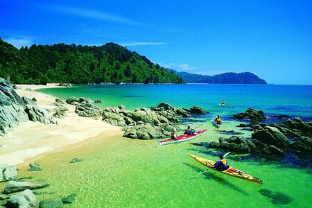
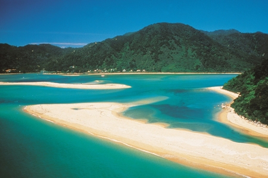
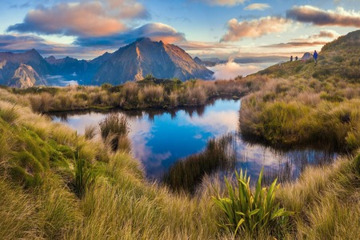
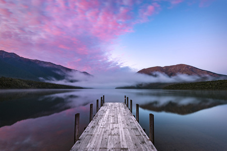
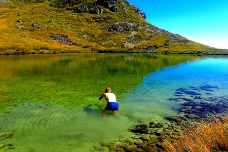
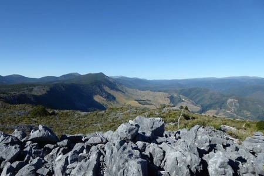
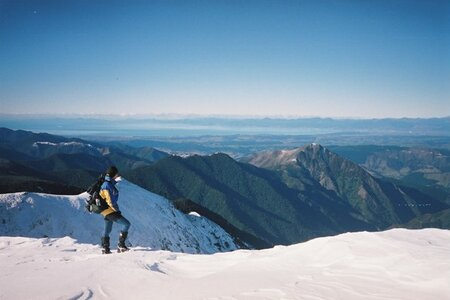

Nelson Tasman
La región de Nelson Tasman es conocida por sus impresionantes paisajes
naturales, con variada geografía que va desde largas playas doradas hasta
bosques vírgenes y montañas escarpadas. Nelson está rodeado por montañas
por tres lados, con la bahía de Tasman Bay por el otro.
La región es la puerta de acceso al parque nacional
Abel Tasman, el parque nacional Kahurangi, los lagos Rotoiti y Rotoroa
dentro del parque nacional de los Lagos Nelson.
Es un centro de turismo verde y de aventura y mantiene una reputación para los aficionados a la
espeleología, gracias a los importantes sistemas de cuevas cerca de Takaka
Hill y los montes Owen y Arthur, que poseen las mayores cavernas
exploradas en el hemisferio sur.






